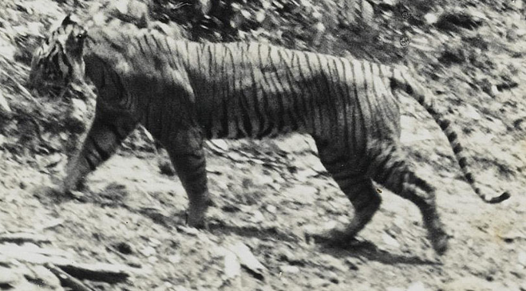
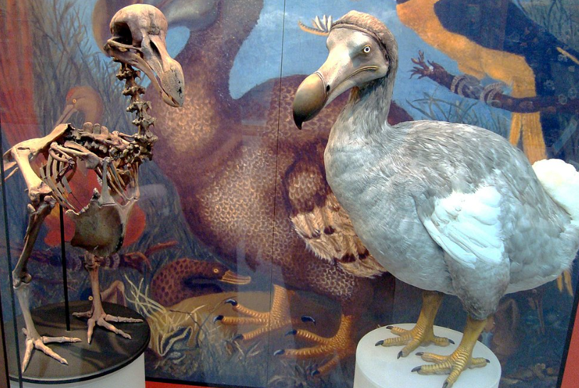
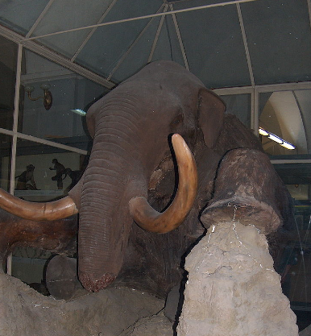

| Harimau Jawa |
Harimau Jawa (Panthera tigris sondaica) adalah subspesies harimau yang hidup terbatas (endemik) di Pulau Jawa. Harimau ini telah dinyatakan punah di sekitar tahun 1980-an, akibat perburuan dan perkembangan lahan pertanian yang mengurangi habitat binatang ini secara drastis. |
 |
| Burung Dodo |
Dodo (Raphus cucullatus) adalah burung yang tak dapat terbang yang sudah punah. Burung ini pernah hidup di pulau Mauritius, yang terletak di Madagascar, Samudra Hindia. Kerabat burung ini yang paling dekat adalah Rodrigues solitaire, yang juga sudah punah. Kerabat terdekat burung ini yang masih lestari adalah merpati nicobar. Burung ini memiliki bulu yang berwarna keabu-abuan, pemakan buah-buahan, dan juga bersarang di tanah. Akan tetapi, burung dodo punah di antara pertengahan sampai akhir abad ke-17 akibat aktivitas yang dilakukan manusia. Karena kepunahannya, dodo sering dijadikan arketipe-arketipe. |
 |
| Mammoth |
Mamut adalah genus gajah purba yang telah punah. Ukuran tubuhnya lebih besar daripada gajah normal yang ada di dunia saat ini. Gadingnya melingkar membentuk kurva ke arah dalam dan, dalam spesies utara, dengan rambut panjang. Mereka hidup dalam masa Pleistosen sejak 1,6 juta tahun lalu sampai sekitar 10.000 tahun lalu. Tetapi penemuan terbaru menunjukkan bahwa populasi mamut terakhir hidup jauh lebih lama di pulau terpencil dekat Lingkar Arktik bernama Pulau Wrangel sekitar 4.000 tahun yang lalu hingga manusia pertama datang ke pulau itu. Kata mamut berasal dari bahasa Rusia (мамонт). |
 |